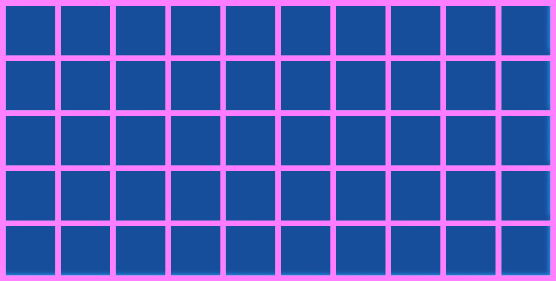
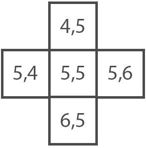
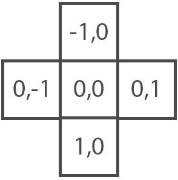
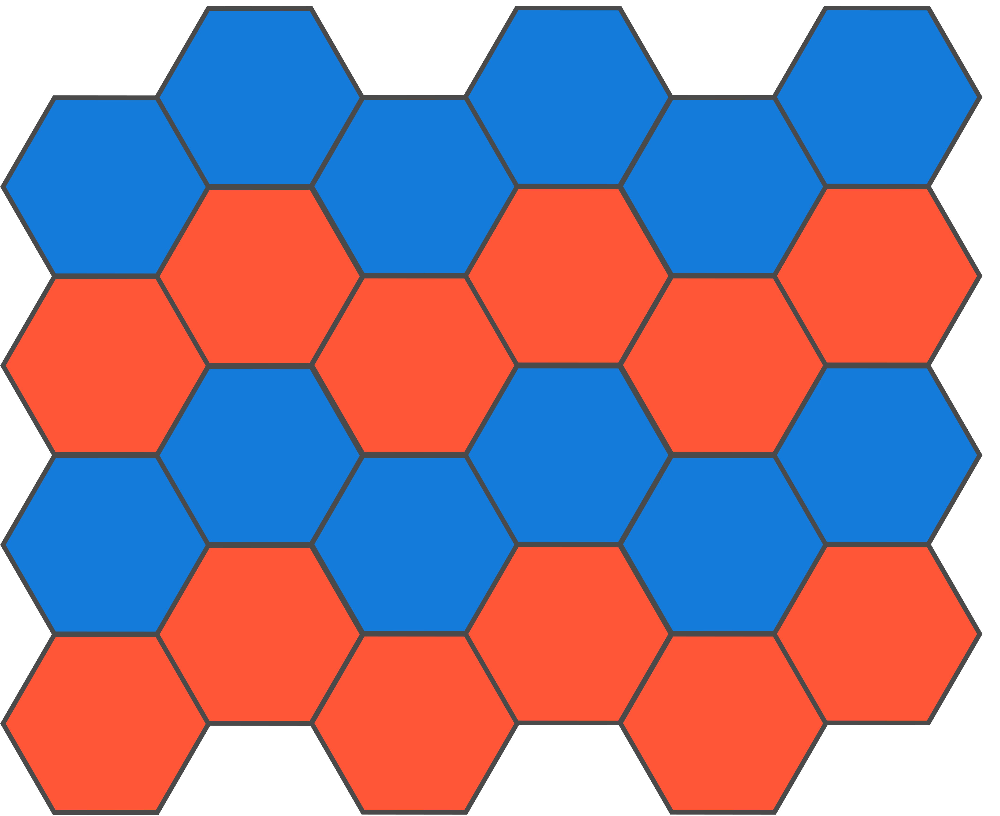
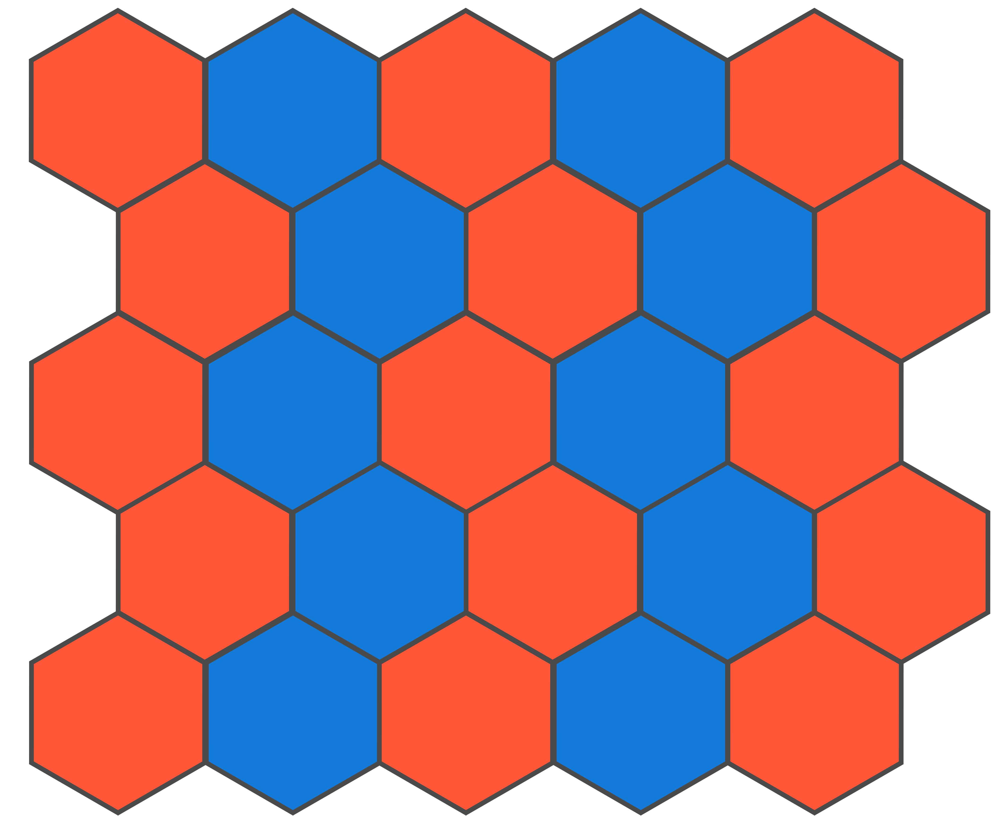

Labyrinthes

Contexte
Je commence à me rendre compte que la difficulté de tout projet ne provient pas uniquement du fait de coder, mais surtout, de l'organisation et de la structure du projet en lui même.
Le sujet que je compte explorer, la génération de labyrinthes me permettra de m'exercer sur ce point précis, à l'aide du moteur de jeu Unity.
De manière plus concrète, l'objectif est de pouvoir générer des labyrinthes avec différentes méthodes et formes, à partir d'une simple interface utilisateur.
Réalisation
Concepts
Définition d'un labyrinthe

D'après Wikipedia, "Un labyrinthe est un tracé sinueux, muni ou non d'embranchements, d'impasses et de fausses pistes destiné à perdre ou ralentir celui qui cherche à s'y déplacer."
Il y a cependant quelques règles à respecter pour qu'un labyrinthe soit dit "parfait".
Chaque cellule du labyrinthe doit être réliée aux autres et ce, par un chemin unique (on parle de surface connexe).
Il ne doit ainsi pas y a avoir de boucles ou de zone fermée.
Il existe de nombreuses méthodes pour créer un labyrinthe, une des plus commune est la génération par "suppression de murs".
Le labyrinthe est initialement rempli de murs. Toutes ces zones entourées de murs, sont appelés des cellules.
L'objectif est de relier ces cellules, en supprimant les murs entre elles afin de recréer cette impression de dédale.
Cellule
Dans sa forme la plus simple, une cellule est composée de murs (quatre pour une cellule de forme carrée).
Elle possède également une position, représentée par une coordonée X (axe des abscisses) et Y (axe des ordonnées). Cette position permet de la différencier des autres cellules du labyrinthe.
Nous verrons que certaines méthodes de génération demandent à ce que les cellules possèdent des propriétés supplémentaires.
Comme une valeur indiquant si cette cellule a été visitée ou bien une donnée séparant les cellules en sous-zones du labyrinthe.
Précisions techniques
Le code suivant montre la représentation informatique d'une cellule.
On retrouve les entiers X et Y correspondant à la coordonée de la cellule.1 public class MazeCell 2 { 3 public GameObject[] walls; 4 public int x, y; 5 6 public MazeCell(int x, int y) 7 { 8 this.x = x; 9 this.y = y; 10 } 11 }
La taille du tableau walls sera fixée et son contenu assigné pendant la génération d'un tableau rempli de cellules.
L'utilisation de classe rend le concept de cellule extrement modulable. Pour chaque méthode de génération, nous pourrons créer une classe héritant de MazeCell et ainsi n'avoir que les données dont nous avons besoin.
Maintenant que nous avons définie informatiquement ce qu'est une cellule de labyrinthe, nous pouvons commencer à créer une grille constituée de plusieurs de ces cellules.
Tableau de cellules
C'est grâce à elles, qui, une fois stockées dans un tableau en deux dimensions, permettent de représenter notre labyrinthe.

Dans le cas d'un labyrinthe carré, on voit de manière nette la relation entre celui-ci et sa représentation en tableau deux à dimensions.
Habituellement, la coordonée [0, 0] des tableaux à deux dimensions se situe en haut à gauche.
Afin de simplifier le placement de nos cellules dans l'espaces, la coordonée [0, 0] se trouvera en bas à gauche du tableau.
Il sera ainsi plus aisé de convertir les coordonées des cellules (deux dimensions) dans l'espace (trois dimensions).
 Repère orthonormé de Unity
Repère orthonormé de Unity

Maintenant que nous savons comment sont stockées nos cellules dans un tableau, nous pouvons essayer de les placer dans l'espace.
Le plus simple est d'utiliser les "Unity's Prefab" qui nous permettent de créer et configurer à l'avance,
un objet que nous pourrons réutiliser pendant l'éxecution du programme.
Voici donc le prefab, de notre cellule carrée.
D'après notre tableau à deux dimensions, l'espacement entre chaque cellule est de 1 (sur l'axe X et Y), chaque cellule devrait donc faire une taille de 1 par 1.
Cependant, lorsque l'on crée un labyrinthe avec ces dimensions, certaines paroies possèdent des angles peu esthétique.
Passer la taille des murs à 1,1 (les faisant légèrement dépasser d) nous permet de résoudre ce problème. Les murs des cellules voisines seront désormais superposés.
Cela ne pose pas de problème mais nous verrons comment les supprimer dans le but d'optimiser les performances du programme.
Maintenant que nous possédons notre cellule sous forme de préfab, nous pouvons à l'aide d'une longueur et d'une largeur, faire apparaitre nos cellules.
Il faut pour cela, parcourir chaque case depuis la coordonée [0, 0] à la coordonée [longueur - 1, largeur - 1] (-1, car on compte depuis 0).
Précisions techniques
Voici le code permettant de créer un labyrinthe rempli de cellules.
A l'aide de la fonction Instantiate de Unity, ce code nous permet de créer une cellule pour chaque case de notre tableau à deux dimensions mais également de l'initialiser pour lui donner ses valeurs.1 MazeCell[,] maze; 2 GameObject cell_prefab; 3 int height, width; 4 5 maze = new MazeCell[height, width]; 6 7 for(int y = 0; y < height; y++) 8 { 9 for (int x = 0; x < width; x++) 10 { 11 maze[y, x] = new MazeCell(y, x); 12 Vector3 position = new Vector3(y, 0, x); 13 GameObject cell = Instantiate(cell_prefab, position, Quaternion.identity); 14 15 cell.walls = new GameObject[4]; 16 maze[y, x].walls[0] = cell.transform.Find("TopWall").gameObject; 17 maze[y, x].walls[1] = cell.transform.Find("LeftWall").gameObject; 18 maze[y, x].walls[2] = cell.transform.Find("BottomWall").gameObject; 19 maze[y, x].walls[3] = cell.transform.Find("RightWall").gameObject; 21 } 22 }Labyrinthe vu de dessus Résultat en 3D
Suppression de murs entre cellules
Voyons maintenant comment relier deux cellules voisines.
Relier veut en réaliter dire, supprimer les murs qui séparents ces cellules.
Dans l'exemple suivant, nous voulons relier deux cellules voisines horizontalement. Pour ce faire, il faut supprimer le mur de droite de la cellule A et le mur gauche de la cellule B.
Précisions techniques
Pour nous simplifier la vie, faisons une fonction qui relie deux cellules voisines.
L'objectif est de supprimer le mur de chaque cellule en fonction de la position de son voisin.C'est à l'aide de la variable dir que nous pouvons savoir comment sont situées nos deux cellules.1 void LinkNeighbors(MazeCell cell_1, MazeCell cell_2) 2 { 3 Vector2 dir = new Vector2(cell_1.x - cell_2.x, cell_1.y - cell_2.y); 4 5 if (dir.y == -1) 6 DestroyWalls(cell_1.TopWall, cell_2.BottomWall); 7 else if (dir.y == 1) 8 DestroyWalls(cell_1.BottomWall, cell_2.TopWall); 9 else if (dir.x == -1) 10 DestroyWalls(cell_1.RightWall, cell_2.LeftWall); 11 else 12 DestroyWalls(cell_1.LeftWall, cell_2.RightWall); 13 } 14 15 void DestroyWalls(GameObject wall_1, GameObject wall_2) 16 { 17 Destroy(wall_1); 18 Destroy(wall_2); 19 }
Voici un exemple expliquant de manière visuelle, comment la variable dir fonctionne et interprète les coordonnées qu'elle calcule.
A gauche on peut voir les coordonées réelles des cellules, tandis qu'à droite, sont affichées les coordonées relatives à la cellule centrale.Maintenant que nous savons identifer les cellules voisines, il suffit de supprimer les murs adéquats avec la fonction Destroy de Unity.
Suppresion des murs superposés
Une fois le labyrinthe généré, nous pouvons supprimer les murs superposés restant.
Cela permet d'optimiser l'efficacité du programme en supprimant les murs inutiles.
Précisions techniques
Pour chaque cellule, on vérifie qu'elle ne soit pas en bordure du labyrinthe (afin de ne pas ouvrir le labyrinthe).1 for (int y = 0; y < height; y++) 2 { 3 for (int x = 0; x < width; x++) 4 { 5 if (x < width - 1 && _maze[y, x].RightWall != null && _maze[y, x + 1].LeftWall != null) 6 Destroy(_maze[y, x].RightWall); 7 if (y < height - 1 && _maze[y, x].TopWall != null && _maze[y + 1, x].BottomWall != null) 8 Destroy(_maze[y, x].TopWall 9 } 10 }
Si cette cellule possède un mur droit et que la cellule à sa droite possède un mur gauche. On supprime le mur droit de la cellule actuelle.
Le processus est le même pour le mur du bas. Si la cellule scrutée et celle du dessous possèdent leurs murs voisins, on supprime le mur bas de la cellule actuelle.
Voici donc tous les concepts nécessaires pour créer un labyrinthe.
Avant de présenter les algorithmes de génération, voici une section montrant brièvement, comment ces concepts peuvent être réutilisées afin de créer des labyrinthes à cellules hexagonales.
Cellules hexagonales
Un hexagone est un polygone à six sommets et six faces. On retrouve généralement cette forme géométrique sous deux orientations :
La seule différence avec la celulle carrée est le nombre de murs.
La classe précédemment définie (MazeCell ) reste utilisable, la seule chose à modifier est l'attribution des murs de la cellule.
La dernière question à nous poser est comment peut-on représenter une grille hexagonale dans un tableau à deux dimensions ?
De nombreuses représentations existent déjà avec chacune leurs avantages et inconvénients.
La solution choisie ici, est d'utiliser la même méthode que pour les cellules carrées. C'est une représentation simple à mettre en place,
cependant, elle s'avère peu pratique lorsque l'on souhaite relier des cellules entre elles.
Précisions techniques
Voici la première difficulté des grilles hexagonales. Selon l'orientation de l'hexagone, une cellule sur deux sera décalée.
Sur l'image de gauche on peut constater que sur chaque ligne, un hexagone sur deux se trouve décalé en hauteur.
A droite, ils seront décalée sur l'axe horizontal.Ce choix de représentation nous force donc à différencier les opérations, en fonction de l'orientation de l'hexagone.Grille d'hexagones "flat" Grille d'hexagones "pointy"
Il existe cependant d'autres moyen de stocker ces hexagones dans un tableau.
Ceux-ci sont présentés sur le guide des hexagones de Red Blob Games
Algorithmes
Backtracker
Probablement l'une des plus répandues (car l'une des plus simples), la méthode du backtracker (ou retour arrière en français) permet de systématiquement tester l'ensemble des possibilités.
Cette famille d'algorithmes est utilisée pour résoudre des problèmes algorithmiques comme de l'optimisation combinatoire ou des jeux, telle que le problème des huit dames ou la résolution de sudoku.
Appliqué à nos labyrinthe, en partant d'une grille remplie de murs, cette méthode a pour objectif de créer un chemin, en passant par toutes les cellules de notre labyrinthe.
De manière plus détaillée :
Chaque cellule du tableau possède un état visitée ou non (initialement mis à non-visitée). Depuis une cellule de départ, le programme va se déplacer aléatoirement sur une cellule non-visitée, voisine à la sienne (et définir son état comme visitée).
Dès lors que celui-ci ne possède plus de cellules voisines non-visitées, il va revenir sur ses pas jusqu'à en retrouver.
Si il n'en trouve plus, cela veut dire que toutes les possibilités ont été testé.
Pour garder en mémoire les déplacements effectués, nous stockerons les cellules visitées dans une pile (une structure de donnée informatique).
Algorithme :
1 - Choisir une cellule, la marquer comme visitée et l'ajouter à la pile
2 - Tant que la pile n'est pas vide
1 - Prendre la cellule au sommet de la pile et la considérer comme la cellule actuelle
2 - Si la cellule actuelle possède au moins un voisin "non-visité"
1 - Mettre la cellule actuelle au sommet de la pile
2 - Choisir une des cellules voisines non-visitée
3 - Relier la cellule actuelle à la cellule voisine
4 - Définir la cellule voisine comme visitée et la mettre au sommet de la pile
Cette méthode est extrêmement simple à implémenter et plutôt efficace. Elle peut cependant se révéler gourmande en stockage à cause de la taile de la pile, qui augmente en fonction de la surface du labyrinthe à générer.
Un autre inconvénient est le résultat qui se retrouve quelques fois non pas "labyrinthique" mais juste comme un long chemin tortueux, avec que peu d'embranchements. Ceci s'explique par le fait que la méthode explore aussi loin que possible chaque
possibilitées, avant de revenir sur ses pas.
Kruskal
L'algorithme de Kruskal est initialement appliqué dans le domaine des graphes.
Il permet de rechercher un arbre recouvrant le poids minimum dans un graphe.
Une des applications concrètes que l'on pourrait lui trouver, serait de simplifier un câblage ou bien
de supprimer les chemins de transports les moins rentables.
Cette méthode est une version aléatoirisée de l'algorithme d'origine.
Initialement la méthode sélectionne
les arêtes d'un graphe par poids croissant.
Or ici, elles seront séléctionnées de manière aléatoire.
Plus concrètement, à partir d'un labyrinthe rempli de murs, chaque cellule possèdera un set (un identifiant unique).
L'objectif est de relier les cellules de sets différents et d'appliquer un set commun aux cellules réliées.
Algorithme :
1 - Tant que toutes les cellules n'ont pas le même set
1 - Prendre deux cellules voisines avec un set différent
2 - Relier ces deux cellules
3 - Choisir un des deux set et l'appliquer à toutes les cellules du set opposé
Cet méthode est plutôt simple et direct. Elle peut cependant se révéler couteuse, notamment lorsqu'il faut changer le set d'un groupe de cellules.
La manière la plus simple est d'itérer sur toutes les cellules du labyrinthe. Il est cependant possible d'utiliser des listes chainées ou d'autres structures de données pour isoler les sets
afin d'alléger cette opération.
Dans sa finalité, l'algorithm de Kruskal créé de nombreuses impasses peu profondes.
Prim
La méthode de Prim a de nombreuses ressemblances à celle de Kruskal, son objectif est similaire, mais la manière de l'atteindre est fondamentalement différente.
Cet algorithme permet également de trouver un arbre recouvrant le poids minimum dans un graphe.
Là où la méthode de Kruskal sélectionne les arrêtes de poids faibles dans tout le graphe, Prim va, depuit un point de départ, faire croître un abre en sélectionnant les arêtes
de poids faibles incidentes à cet arbre.
Encore une fois, cette méthode est aléatoirisée par rapport à l'algorithme d'origine.
Au lieu de choisir l'arête la plus faible, elle sera choisie de manière aléatoire.
Pour appliquer ce concept à nos labyrinthes, il va falloir garder en mémoire :
Premièrement, les cellules visitées
Puis, les cellules voisines des cellules visitées (que nous appelerons les cellules "en bordure")
A partir d'une cellule de départ, le programme va relier une cellule en bordure à une cellule visitée.
Cela aura pour effet de faire croître une "zone" qui va petit à petit, former notre labyrinthe en supprimant les murs de aléatoirement.
Algorithme :
1 - Choisir une cellule de départ et noter cette cellule comme visitée
2 - Noter ses cellules voisines comme bordure
3 - Tant qu'il existe des cellules en bordure
1 - Choisir aléatoirement une des cellules en bordures
2 - La relier à une cellule visitée voisine
3 - Noter cette cellule comme visitée et marquer ses voisins (non-visités) comme bordure
Sans grande surprise, le résultat est similaire à celui de Kruskal.
Le labyrinthe possède ici aussi de nombreuses impasses peu profondes.
Divisions récursives
Pour la première fois, nous partirons d'un labyrinthe sans murs à l'intérieur !
Cette méthode consiste à découper notre labyrinthe en une multitude de salle (que l'on nommera "chambre").
Le concept et son implémentation sont on ne peut plus simple.
Il faut diviser chaque chambre en quatre à l'aide de murs. Pour que les nouvelles chambres ne soient pas inaccessibles, il faut veiller à laisser un passage dans les murs créés.
Il est possible de rendre le résultat un peu plus intéressant en divisant les chambres, non plus au milieu, mais de manière aléatoire.
Algorithme :
1 - Depuis la chambre initiale, créer deux murs perpendiculaires (de sorte à créer 4 sous-chambres)
2 - Créer un passage dans trois des quatre murs
3 - Si il est possible de diviser une sous-chambre
1 - Retourner à l'étape 1 pour cette sous-chambre
Le style de ce labyrinthe est extrêmement différent de ceux vues précédemment
Cette méthode a tendance à crééer de longs couloirs ce qui rend la résolution du labyrinthe plus aisé, notamment car les sépération entre les chambres sont extrêmement appararentes.
Ce concept si simple, peut être légèrement modifié pour obtenir d'autres résultats.
Il est par exemple possible de mettre une limite de recursivité afin d'obtenir des salles plus grandes.
Divisions récursives améliorées
Pour finir, voici un algorithme de Jamis Buck, reprenant le concept de la méthode récursive.
L'algorithme précédent, rend les passages entre les zones du labyrinthe plus que visibles.
En repérant ce passage, il est possible de faire le chemin à l'envers et de trouver le moyen d'y arriver.
Il est à noter que tous les labyrinthes possèdent ces passages. Si ils sont facilement repérables ici, c'est à cause des longs murs créés pour séparer les chambres.
L'objectif de cette nouvelle méthode est de rendre moins évident la séparation des zones du labyrinthes, tout en gardant les propriétés de la méthode récursive.
La solution trouvée par Jamis Buck consiste a aléatoiriser la forme des chambres. Au lieu d'avoir une surface rectangulaire, la chambre pourra être de n'importe quelle forme.
C'est de cette manière qu'il réussit à "casser" le quadrillage de la méthode récursive de base.
La manière de trouver la forme de la chambre est assez atypique.
La forme d'une chambre est désormais définie par une région.
Une région, est un ensemble de cellules, voisines les unes des autres. (Il ne peut donc pas y avoir de cellule non-reliée à la région).
Initialement, toutes les cellules du labyrinthe formeront une région.
Pour séparer cette chambre, il faut créer deux sous-régions.
La manière dont ces sous-régions se partagent les cellules de la région principale est la suivante :
Au début , chaque sous région commence depuis une cellule choisie au hasard.
Les sous-régions vont aléatoirement s'étendre sur leurs cellules voisines.
Ce processus se termine dès lors qu'il ne reste plus de cellule non-occupée par une sous-région.
C'est ainsi que nous nous retrouvons avec une chambre donc la séparation n'est plus aussi régulière et évidente que précédemment.
Le reste est assez similaire à la méthode récursive de base.
Une fois les sous-régions séparées et le passage entre elles créé, le processus se répéte de manière récursive pour chaque sous-région.
Algorithme :
1 - Former une région contenant toutes les cellules du labyrinthe
2 - Séparer la région de la manière suivante :
1 - Choisir deux cellules de départ depuis la région initiale et les assigner à une une liste
2 - Choisir au hasard une cellule dans la liste puis la retirer de la liste
3 - Pour tous les voisins de la cellule choisie, si ils n'appartiennet pas déja à une sous-région
1 - Les rajouter à la liste
2 - Assigner chaque voisin à la sous-région de la cellule choisie
4 - Répéter 2.2 et 2.3 jusqu'à ce que la région soit séparéee
3 - Construire un mur séparant les deux sous-régions tout en laissant un passage dedans
4 - Répéter 2 et 3 de manière récursive pour chaque sous régionEn limitant le nombre de récursion, il est possible de faire varier la taille des chambres. A la place de n'avoir que des couloirs, il est désormais possible d'avoir des "salles" dans le labyrinthe. Ce qui change des générations vues auparavant.
En limitant la profondeur de récursion, il se peut qu'une chambre apparaisse au milieu d'une zone et qu'elle ne soit donc pas connectée au reste des murs du labyrinthe.
Lorsque les deux sous-régions cherchent à s'étendre, il arrive que l'une d'entre elles entoure l'autre créant ces îlots.
Pour éliminer ces cas, il faut modifier l'étape 2.1 de l'algorithme.
En plus de choisir aléatoirement une cellule depuis la liste, il faut en plus vérifier que celle-ci se trouve en bordure de la région.
Il est désormais impossible que ces îlots se forment car les cellules de départs seront dorénavent toujours rattachées au reste du labyrinthe.
Structure du projet
Comme annoncé au début, l'objectif est de structurer le mieux possible ce projet.
L'idée est d'avoir quelque chose d'extrêmement modulable et améliorable, afin de pouvoir rajouter ou bien modifier des éléments sans déteriorer le travail existant.
Pour l'utilisateur, le plus convénient est d'avoir une interface, offrant la possibilité de sélectionner et modifier :
- La forme de cellule
- Les dimensions du labyrinthe
- La méthode de génération
- D'autres parmètres, liés à la méthode choisie
C'est cette interface qui, après avoir récolté les entrées de l'utilisateur, va transmettre les informations pour générer le labyrinthe demandé.
Dans ce projet, le fait d'avoir plusieurs formes de cellule, oblige à réecrire les méthodes de génération pour chaque forme de cellule.
Le plus convénient est donc de créer un intermédiaire pour chacune de ces formes.
Cet intermédiaire aura pour rôle, de transmettre les informations récoltées par l'interface, à la méthode choisie, mais également de générer le labyrinthe rempli de murs (si nécessaire).
Ce modèle permet de rajouter des méthodes de génération pour chaque forme de cellule.
Il permet également d'implémenter de nouvelles formes sans altérer le fonctionnement de ce qui existerait déjà.
Conclusion
En travaillant sur ce projet les week-ends et quelques heures par semaines il m'a fallu 2 mois pour considérer ce projet comme stable et terminé.
Il est cependant possible d'améliorer et d'optimiser certaines méthodes de génération mise en place. Quelques unes comme la récursivité améliorée ou la méthode de Kruskal sont assez demandeuses en ressources.
Avec du recul, je me rends compte que je n'ai que gratté la surface de la génération de labyrinthes.
Il existe une immensité de méthodes avec toutes leurs spécificités, avantages et inconvénients.
Pour rendre ce projet un peu plus complet, il est possible de rajouter d'autres méthodes de générations ainsi que d'autres formes de cellules (triangulaires, circulaires, etc ...)
Une suite à ce projet pourrait être de résoudre les différents labyrinthes créés.
Sources
Backtracker
Wikipedia | Maze generation algorithm : https://en.wikipedia.org/wiki/Maze_generation_algorithm
Wikipedia | Retour sur trace : https://fr.wikipedia.org/wiki/Retour_sur_trace
Wikipedia | Backtracking : https://en.wikipedia.org/wiki/Backtracking
The Coding Train | Coding Challenge #10.1: Maze Generator with p5.js - Part 1 : https://www.youtube.com/watch?v=HyK_Q5rrcr4
Jamis Buck Blog | Recursive Backtracking : https://weblog.jamisbuck.org/2010/12/27/maze-generation-recursive-backtracking
Kruskal
Wikipedia | Algorithme de Kruskal : https://fr.wikipedia.org/wiki/Algorithme_de_Kruskal
Techno Science | Algorithme de Kruskal - Définition et Explications : https://www.techno-science.net/definition/6472.html
Hurna | Kruskal : https://hurna.io/academy/algorithms/maze_generator/kruskal_s.html
Jamis Buck Blog | Kruskal's algorithm : https://weblog.jamisbuck.org/2011/1/3/maze-generation-kruskal-s-algorithm
Prim
Wikipedia | Maze generation algorithm : https://en.wikipedia.org/wiki/Maze_generation_algorithm
Wikipedia | Algorithme de Prim : https://fr.wikipedia.org/wiki/Algorithme_de_Prim
Jamis Buck Blog | Prims algorithm : https://weblog.jamisbuck.org/2011/1/10/maze-generation-prim-s-algorithm
Récursif
Wikipedia | Maze generation algorithm : https://en.wikipedia.org/wiki/Maze_generation_algorithm
Lauren K. Williams | Recursive Division Maze Generation : http://www.integral-domain.org/lwilliams/Applets/algorithms/recursivedivision.php
Jamis Buck Blog | Recursive Division Algorithm : http://weblog.jamisbuck.org/2011/1/12/maze-generation-recursive-division-algorithm
Récursif amélioré
Jamis Buck Blog | Better recursive division : http://weblog.jamisbuck.org/2015/1/15/better-recursive-division-algorithm.html